Windows¶
The installation for the Windows operating system consists of the following steps:
- Installation of a suitable Python distribution
- (optional) Installation of the MiKTex Latex distribution (under Windows, Latex support is disabled by default, and has to be activated using the corresponding environment variable).
- Installation of the Debye decomposition tools
There are multiple suitable Python distributions to choose from. At the moment the Anaconda distribution is recommended: http://continuum.io/downloads (use Python 2.7, 64 bit)
In the following, please install only one of the Python distributions, and then proceed with the installation of the DD-Tools, and optionally the MikTex distribution.
Installing the Anaconda Python distribution¶
Download the Python 2.7, 64 bit version of the Anaconda distribution: http://continuum.io/downloads
Start by opening the file manager in the download directoy:

The following screenshots show the steps of the setup wizard. Usually all presets can be accepted by clicking on the ‘next’ button.
 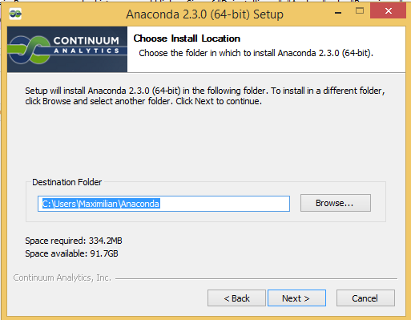
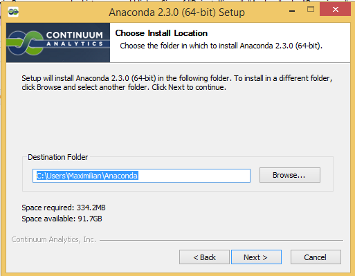


{kind=link}
Warning
Note that Anaconda (as tested in Juli, 2015) does not register the .py extension with the Python interpreter. That means that, at this point, you cannot click on a Python file and execute it as any executable. The following screenshots show you how to register Python with the .py extension.
Find the file fix_registry_windows.py that resides in the root directory of the zip-archive (or the extracted directory). Note that sometimes the file extension .py is not shown. Right click on the file, and select “Open with”.
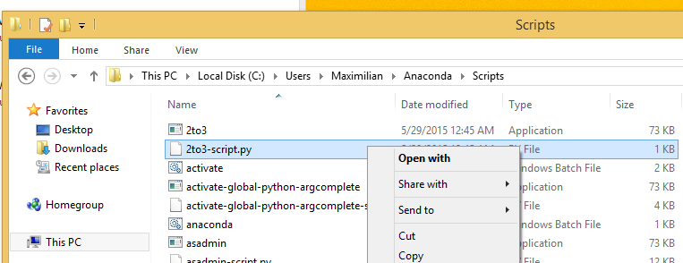The following dialog in Windows 7 looks like:
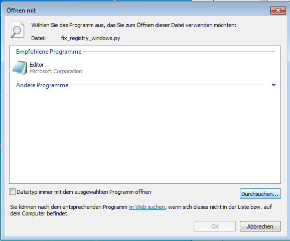The Windows 8.1 version looks like this:

Click on ‘More options’ to expand the window:

Check the box “Use this app for all .py files”. Scroll down and click on “Look for another app on this PC” at the bottom:
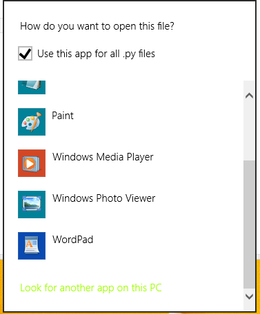A file-open dialog appears. Select the python.exe binary in the Anaconda installation directory (in this example C:\UsersMaximilian\Anaconda), and click “open”.

The icon next to all Python (.py) files should now show the Python logo:
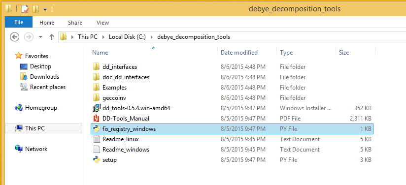
{kind=link}
{kind=link}
{kind=link}
{kind=link}
Note
During the process of associating the file type .py with the Python.exe executable the Python script fix_registry_windows.py was executed. This script tries to fix some common problems with the file type association. If you associated the extension via another way, please execute this script once.
Installing the DD tools¶
The DD tools are provided in .zip file which contains the source code, the documentation, examples, and a Windows installation file. Extract the archive file to a new directory:

We provide a MSI-Installation file called dd_tools_0.5.4.win.amd64.msi (the version number can vary). Execute this installer by double clicking on it, and follow the installation instructions (usually all preset settings can be accepted by clicking ‘next’).

After the installation, open the following subdirectory in the extracted directory: dd_interfaces/examples/dd_single/01. Execute the file run_dd by double clicking on it:
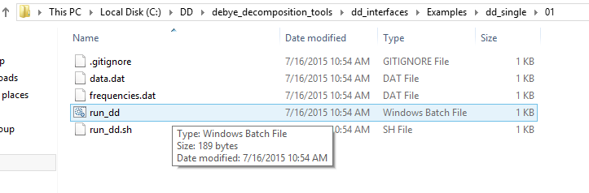A terminal window should appear with the output of the call.
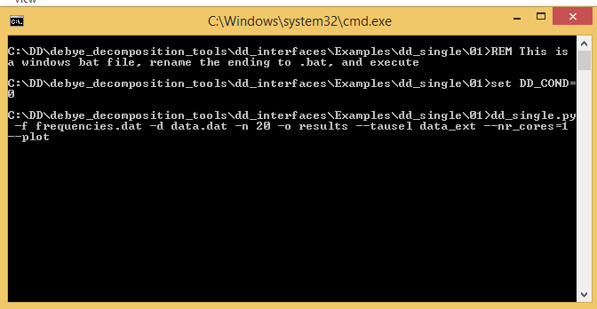The window should close itself after the decomposition finished. The installation was successful if a directory results/ was created with the fit results.
(optional) Installing MiKTex¶
- MiKTex can be obtained from the homepage http://miktex.org/download.
Note
We had some problems and long waiting times during the installation of MiKTex. Therefore we disabled the Latex support in the DD tools for the Windows installation, and made MiKTex an optional requirement.
Note
The first plotting call will take a LONG time, as MiKTex will (automatically) install (and download) all required latex packages. Subsequent calls should be much faster!
{kind=link}
 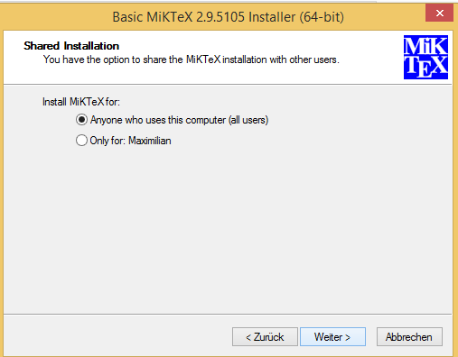
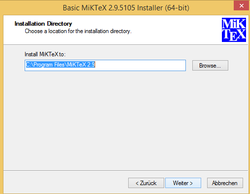
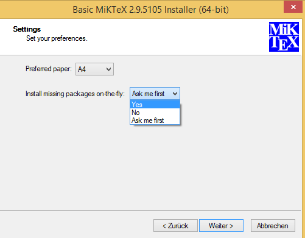
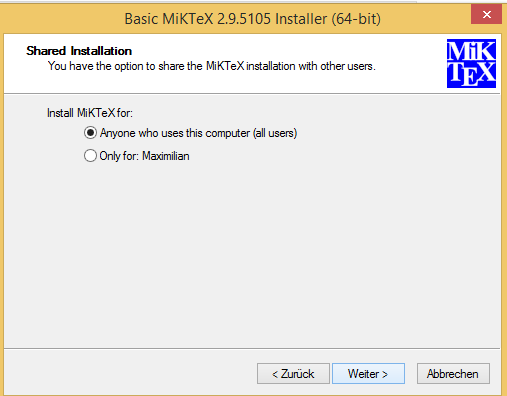
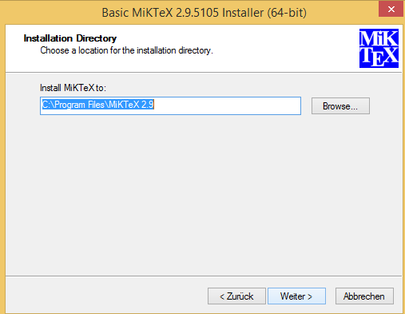
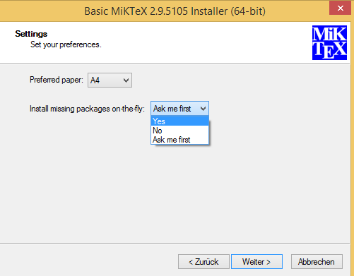
{kind=link}
{kind=link}
{kind=link}
 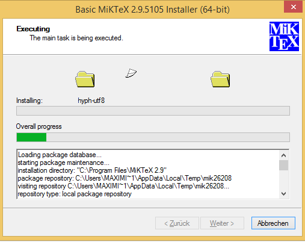
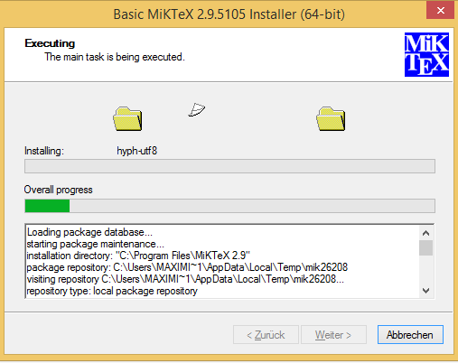
{kind=link}
Problems¶
We experienced some Problems with Anaconda 2.4 on Windows 64-bit with the mock-module missing:
pkg_resources.DistributionNotFound: The 'mock' distribution was not found and is required by matplotlib
Open the Anaconda command prompt an execute:
pip install mock
if the decomposition starts, but command line options are not recognized, this is usually a problem with incorrect file type associations. We provide a file fix_registry_windows.py (which normally already executed during the installation process) which tries to fix some of these problems. Just execute it in order to implement the fixes.
In addition, the following web links discuss solutions to this kind of problems: